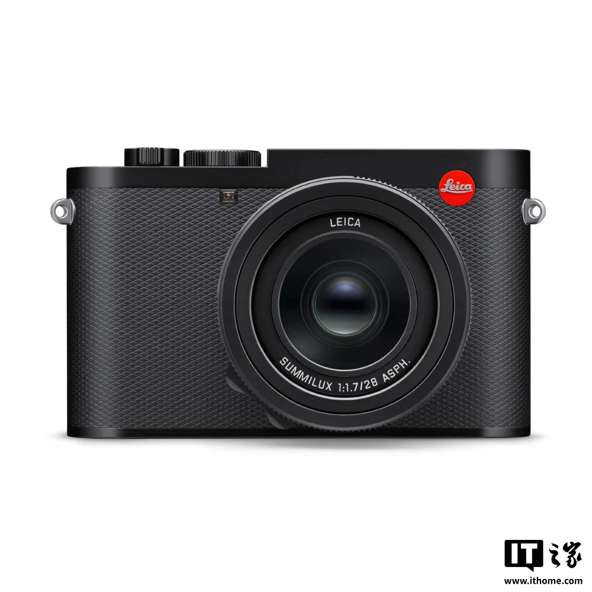

판매 현황
라이카의 마케팅 책임자 Andrea Pacella는 Digital Camera World와의 인터뷰에서 현재 라이카에서 가장 높은 판매량을 기록하고 있는 모델이 M 또는 SL 시리즈가 아닌 Q3라고 밝혔습니다.
성공 요인 및 시장 반응
Andrea Pacella는 라이카 Q 시리즈의 판매 실적이 회사의 기대치를 상회했다고 언급했습니다. 특히 스마트폰 사진이 전통적인 컴팩트 카메라 시장을 압박하는 상황에서, 6,000유로 이상의 고가에 판매되는 고정 렌즈 풀프레임 휴대용 카메라가 이처럼 성공을 거둘 것이라고 예상하지 못했다는 설명입니다.
렌즈 및 촬영 경험
라이카는 Q 시리즈의 성공적인 성과 중 하나로 표준 모델에 탑재된 28mm Summilux 렌즈를 꼽았습니다. 많은 스마트폰이 약 28mm에 가까운 등가 초점 거리를 기본으로 채택하고 있어, 스마트폰 촬영 사용자들이 라이카 Q3로 전환할 때 익숙한 시야를 유지하며 적응하기가 용이해 학습 비용이 낮아졌기 때문입니다. 또한 전문 사진작가들도 28mm 렌즈와 Q2/Q3의 고해상도 디지털 크롭 기능을 활용하여 효율적이고 높은 품질의 촬영 경험을 얻을 수 있습니다.
디자인 및 휴대성
Leica Q3의 외관 디자인 또한 판매량 성장에 기여한 것으로 분석됩니다. 전체적인 부피가 작아 휴대하기 편리하며 우수한 질감을 갖추고 있어, 많은 사진작가와 하이엔드 소비자들이 휴대성과 심미적 가치를 위해 높은 가격을 지불하고 제품을 선택하고 있습니다.
사용자 선호도
Andrea Pacella는 라이카 Q3 사용자 중 3분의 2 이상이 28mm 렌즈 버전을 선택했으며, 나머지 사용자는 43mm 렌즈가 탑재된 Leica Q3 43 버전을 선택했다고 밝혔습니다.
총평
라이카 Q3는 스마트폰의 공세 속에서도 뛰어난 휴대성과 디자인, 그리고 스마트폰 사용자에게 친숙한 28mm 렌즈를 바탕으로 높은 판매고를 기록하고 있습니다. 특히 고품질 크롭 기능과 심미적 가치가 하이엔드 소비자들에게 어필하며 성공적인 성과를 거두고 있습니다.
销售表现
Leica 市场负责人 Andrea Pacella 表示，目前 Leica 销量最好的相机是 Q3，其表现甚至超过了公司预期。尽管在智能手机冲击传统卡片相机市场的背景下，这款售价超过 6,000 欧元（约合 46,724 元人民币）的固定镜头全画幅便携相机依然取得了显著成功。
核心成功因素
Leica Q3 的成功主要归功于以下几个关键因素：
- 视角适配性： 标准版搭载的 28mm Summilux 镜头与大多数智能手机默认的约 28mm 等效焦距相近，降低了移动端用户转型的学习成本。
- 专业创作支持： 高像素数码功能允许摄影师在配合 28mm 镜头时，利用 Q2/Q3 的高像素进行高质量裁切。
- 工业设计与便携性： 其体积较小、质感优良且便于携带，符合高端消费者对审美和便携性的追求。
用户选择分布
在 Leica Q3 用户群体中，不同型号的受青睐程度如下：
- 28mm 镜头版本：占比超过三分之二。
- 43mm 镜头版本（Leica Q3 43）：由剩余用户选择。
总结
Leica Q3 因其出色的便携性、符合移动端习惯的 28mm 焦段以及高像素带来的专业创作空间，在高端市场取得了超预期的销量表现。尽管定价较高，但其独特的工业设计和易于上手的体验使其超越了传统的 M 和 SL 系列。
販売状況
Leicaのマーケティング責任者であるAndrea Pacella氏は、Digital Camera Worldとのインタビューにおいて、現在Leicaで最も高い販売数を記録しているモデルはMシリーズやSLシリーズではなく、Q3であると明かしました。
成功要因と市場の反応
Andrea Pacella氏は、Leica Qシリーズの売上実績が会社の予想を大きく上回ったと述べています。特にスマートフォンによる撮影が従来のコンパクトカメラ市場を圧迫する状況下において、6,000ユーロを超える高価格な固定レンズフルフレーム携帯用カメラがこれほどの成功を収めることは予想していなかったと説明しています。
レンズと撮影体験
LeicaはQシリーズの成功要因の一つとして、標準モデルに搭載された28mm Summiluxレンズを挙げています。多くのスマートフォンが約28mmに近い換算焦点距離をデフォルトとして採用しているため、スマートフォンのユーザーがLeica Q3に移行する際、慣れ親しんだ視野を維持したまま適応しやすく、学習コストが低く抑えられているためです。また、プロのフォトグラッファーにとっても、28mmレンズとQ2/Q3の高解像度デジタルクロップ機能を活用することで、効率的で高品質な撮影体験が得られます。
デザインと携帯性
Leica Q3の外観デザインも販売成長に寄与していると分析されています。全体的なサイズが小さく持ち運びやすいうえ、優れた質感を備えているため、多くのフォトグラッファーやハイエンドな消費者が、携帯性と審美的な価値のために高額な費用を支払って製品を選択しています。
ユーザーの嗜好
Andrea Pacella氏は、Leica Q3ユーザーの選択に関する以下の内訳を明らかにしました。
- 28mmレンズモデル：ユーザーの3分の2以上が選択
- 43mmレンズ（Leica Q3 43）：残りのユーザーが選択
まとめ
Leica Q3は、スマートフォンへの移行が進む市場において、優れたデザインと携帯性、そしてスマホユーザーに馴染みのある28mmという焦点距離を武器に高い評価を得ています。特に高品質なクロップ機能と審美的な価値がハイエンド層に訴求しており、高価格帯ながらも大きな成功を収めています。
Sales Performance
Andrea Pacella, Leica's marketing head, revealed in an interview with Digital Camera World that the Q3 is currently the best-selling model at Leica, surpassing both the M and SL series.
Success Factors and Market Response
Andrea Pacella noted that sales for the Leica Q series exceeded the company's expectations. Specifically, it was unexpected that a high-end fixed-lens full-frame portable camera priced over €6,000 would achieve such success in a market where smartphone photography is putting significant pressure on traditional compact cameras.
Lens and Shooting Experience
Leica attributes one of the key factors behind the Q series' success to the 28mm Summilux lens equipped on the standard model. Because many smartphones utilize a default equivalent focal length close to 28mm, users transitioning from mobile photography find it easy to adapt to the Leica Q3 while maintaining a familiar field of view, thereby lowering the learning curve.
Furthermore, professional photographers can achieve efficient, high-quality results by utilizing the 28mm lens and the high-resolution digital cropping features available on both the Q2 and Q3 models.
Design and Portability
The exterior design of the Leica Q3 is also analyzed as a major contributor to its sales growth. Its compact size makes it highly portable, and its premium build quality allows many photographers and high-end consumers to justify the high price point for both portability and aesthetic value.
User Preference
Andrea Pacella stated that the majority of Leica Q3 users preferred the 28mm version:
- More than two-thirds of users chose the 28mm lens version.
- The remaining users opted for the Leica Q3 43 model equipped with the 43mm lens.
Summary
The Leica Q3 has achieved significant commercial success by combining premium design and portability with a 28mm focal length that feels familiar to smartphone users. Its ability to offer high-quality cropping and aesthetic value allows it to thrive as a high-end alternative in the face of increasing competition from mobile devices.

